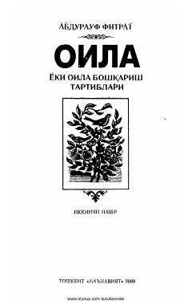

OYFitratning oila qurilishi va tarbiyasiga bag'ishlangan klassik asari.
Abdurauf Fitrat tomonidan yozilgan bu asar oila qurishning asoslari, oila a'zolari o'rtasidagi munosabatlar, ota-ona va farzandlarning huquq hamda burchlari haqida so'z yuritadi. Kitob bolalarni tarbiyalash, oilaning jamiyatdagi o'rni va sog'lom, ma'rifatli avlod yetishtirish masalalarini qamrab oladi. Toshkentda 'Ma'naviyat' nashriyoti tomonidan 2000-yilda ikkinchi nashr sifatida chop etilgan.